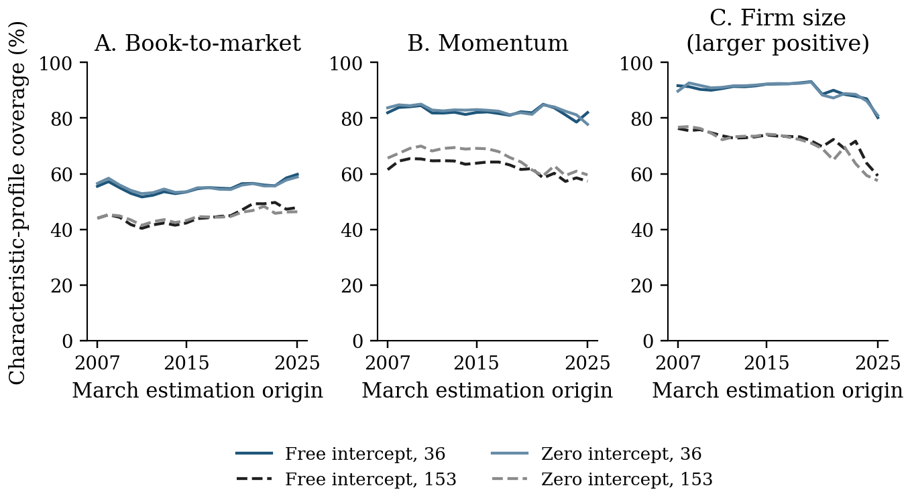
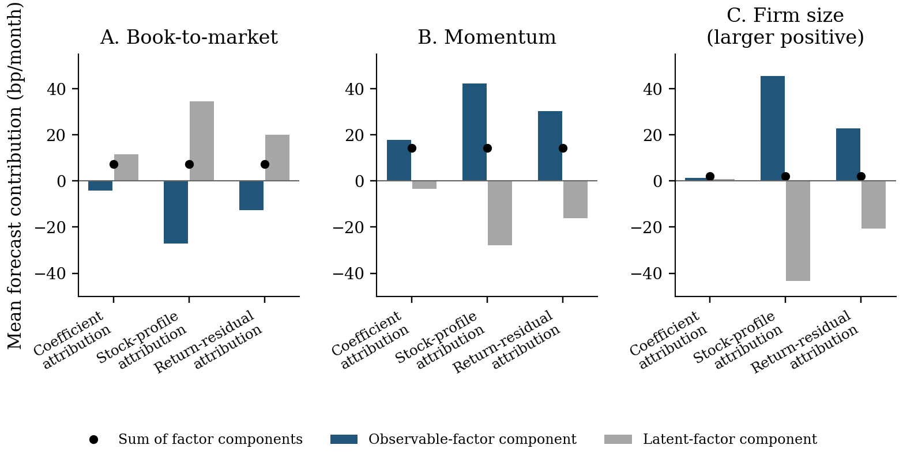

palette = ({
naipca_iab: "#18557f", complete: "#18557f",
qz_ipca: "#8a6a1a",
ipca: "#6f9cc0", rp_pca: "#7a7a7a", ff5: "#b3b3b3",
naipca_beta_only: "#8a8378", beta_only: "#8a8378",
band: "rgba(0,0,0,0.06)", muted: "rgba(0,0,0,0.6)", rule: "rgba(0,0,0,0.1)"
})
LANG = (document.documentElement.lang || "en").startsWith("zh") ? "zh" : "en"
STR = ({ en: { view: "View", cost: "Cost (bp per traded dollar)", universe: "Universe", sample: "Sample (months)", log: "Log scale", models: "Models", statistic: "Statistic", theme: "Theme", sort: "Sort by", method: "Method", scenario: "Scenario", block: "Block (months)", metric: "Metric", intervals: "Intervals", cost_bp: "One-way cost (bp)", failed: "Interactive data failed to load. The static figure is shown instead." },
zh: { view: "视图", cost: "成本（每交易一美元，基点）", universe: "股票池", sample: "样本（月）", log: "对数坐标", models: "模型", statistic: "统计量", theme: "主题", sort: "排序", method: "方法", scenario: "情景", block: "块长（月）", metric: "指标", intervals: "区间", cost_bp: "单边成本（基点）", failed: "交互数据加载失败，改为显示静态图。" } })
t = (k) => STR[LANG][k] ?? STR.en[k] ?? k
fmt2 = (x) => (x == null || Number.isNaN(x)) ? "n/a" : x.toFixed(2)
fmt1 = (x) => (x == null || Number.isNaN(x)) ? "n/a" : x.toFixed(1)
fmtBp = (x) => (x == null || Number.isNaN(x)) ? "> 500" : `${Math.round(x)} bp`
parseMonth = (s) => new Date(`${s}-01T00:00:00Z`)
// Sharpe, annualised, sample std (ddof = 1): matches the release convention
sharpe = (r) => {
const n = r.length, m = r.reduce((a, b) => a + b, 0) / n
const v = r.reduce((a, b) => a + (b - m) ** 2, 0) / (n - 1)
const vol = Math.sqrt(v) * Math.sqrt(12)
return vol > 1e-12 ? (m * 12) / vol : NaN
}
netSeries = (r, to, bp) => r.map((x, i) => x - to[i] * bp / 1e4)
wealthPath = (r) => { let w = 1; return r.map((x) => (w *= 1 + x)) }
nberMarks = (nber) => Plot.rectX(nber, { x1: (d) => parseMonth(d.start), x2: (d) => parseMonth(d.end), fill: palette.band })尺子很重要：因子暴露、归因与投资组合风险
The Ruler Matters: Factor Exposures, Attribution, and Portfolio Risk
收益拟合得更好的因子模型，未必能代表投资者关心的头寸。模型的载荷代表了哪些头寸，以及维持价值、动量或规模倾向所需的股票、交易和风险，都取决于衡量暴露的尺子。
求职论文 工作论文，2026 年 10 月 · 含网络附录共 133 页（英文）
学术报告：剑桥大学经济学院，2026 年 11 月 4 日（受邀，即将举行）；洛桑联邦理工学院（EPFL），2026 年 6 月 16 日（受邀研讨会报告，题为 No-Arbitrage Factor Geometry，内容为本文的前期研究）
收益拟合得更好的因子模型，未必能代表投资者关心的头寸。在美国股票上，把因子模型所用的特征库从 36 个扩充到 153 个，拟合有所改善，模型的因子载荷（股票随各因子变动的强弱）所能复现的动量或规模头寸却变少了。用模型来对冲，还牵涉第二项选择：用哪把尺子衡量暴露（股票在某个特征方向上的得分，或随某个因子变动的强弱）。若尺子无关紧要，两种对冲都会把载荷完全剔除。然而用普通尺子对冲一个账面市值比（价值）头寸，对冲后的头寸按股票权重平方计，平均仍有 46.10% 落在模型的载荷上；换用特征尺子，则一点不留（表 IA.2，第 63 页）。这个数字衡量的是载荷剔除得是否彻底，而不是风险降低了多少。
1 研究问题
在整个研究主线中，这是最后一步。《预测相同，组合不同》表明，即使预测几乎不变，尺子的单位也能改变组合。本文直接在股票上计量这把尺子，追问模型的因子载荷代表了哪些熟悉的头寸，并把答案一直追到维持价值、动量或规模倾向所需的股票、交易和风险。
目标相同，持仓为何不同？一个因子模型收益拟合得好，是否就代表了价值、动量或规模投资者关心的头寸？投资者用它来对冲时，换一把衡量暴露的尺子，需要持有的股票、交易量和随后的风险会不会随之改变？
因子模型给每只股票在每个因子上一个载荷，即股票随该因子变动的强弱。工具化主成分分析（IPCA）是一种标准的因子模型，由公司特征决定这些载荷(Kelly 等 2019)。这些载荷合起来所能构成的全部股票头寸，就是模型的载荷空间。管理人若想保留价值、动量或规模倾向，又不想承担模型的因子风险，就要从头寸中剔除落在这一空间里的部分。本文追问：原有倾向会随之损失多少？要把倾向补回来，又要付出什么代价？
尺子。 要说清一只股票的预期收益有多少归功于哪个驱动因素，模型得先判断两个特征方向是否真的不同、各自有多大。做这个判断的规则，就是尺子。给每个特征一个权重再相加，每只股票就得到一个分数；这样的加权组合称为特征方向（它不是投资组合）。普通尺子（欧氏度量）只看方向的权重本身；特征尺子（格拉姆度量）则看这个方向给真实股票打出的分数：分数通常有多大，两个方向的分数在股票之间是否同高同低。尺子，是模型用来衡量一个特征方向有多大、两个特征方向重叠多少的规则。两个价值信号（如账面市值比与盈利价格比）若总是选中同一批便宜的股票，特征尺子会把它们算作重叠，普通尺子却把它们当作互不相关。
本文的特征尺子逐月在当月可得的股票上计量：取两个方向在这些股票上的分数乘积的平均值，即特征的横截面二阶矩 Q_t（第 I.A 节，式 2，第 3 页）。论文称之为股票暴露尺子（stock-exposure ruler）。权重看似互不相关的两个方向，仍可能选中同一批股票（第 3 页）。这把尺子不改变 IPCA 的估计方式，也不是股票收益的协方差（第 3 页；第 20 页）。
简短回答。 模型相同、股票相同、目标相同，对冲却不同，原因是普通尺子只看载荷的权重，而对冲持有的是股票。若尺子无关紧要，两种对冲留在模型载荷上的部分都应为 0%。在论文的数据中，用普通尺子对冲账面市值比头寸，平均仍留下 46.10%；用特征尺子对冲，则一点不留（第 V.A 节，第 24 页）。除这一对比外，本文还有三项发现。第一，拟合优度与表示能力可以背离：特征库更大，股票收益拟合更好，载荷能复现的动量与规模头寸却更少。第二，同样的拟合收益，在可观测因子（如市场因子）与潜在因子（模型从数据中推断出的共同驱动因素）之间的归属可以截然不同。第三，要在剔除载荷的同时保留倾向，所需的股票、交易与多空头寸总规模，既取决于特征库，也取决于暴露的衡量方式。
2 为什么重要
研究者和投资者常凭拟合优劣评判因子模型，实际用它做的却是别的事：说明它代表了哪些头寸，把收益归于各个因子，以及对冲。每一种用途都取决于暴露怎样衡量，单凭拟合回答不了（第 I.B 节，第 5 页）。
- 经济含义。 拟合更好的模型，能复现的熟悉头寸可能反而更少。在无约束截距下，把特征库从 36 个扩充到 153 个，模型对股票收益的总 R² 由 17.01% 升至 17.70%（表 II，第 17 页）。在组合检验样本中，载荷对动量头寸的表示份额却由 82.27% 降至 62.33%（第 IV.A 节，第 22 页）。
- 实务含义。 管理人剔除模型的载荷、再恢复原来的倾向，代价体现在头寸规模上。以无约束截距下大公司方向的规模倾向为例，特征库为 36 个时，恢复后的多空头寸总规模平均为资本的 3.27 倍；为 153 个时是 1.92 倍（第 V.B 节，第 25 页）。
- 统计含义。 同样的拟合收益，归属可以截然不同。对大公司方向的规模头寸，把可观测因子与潜在因子共享的暴露重新分配，可观测因子的贡献由每月 1.38 个基点（1 个基点为 0.01 个百分点）升至 45.53 个基点；两者合计始终为 2.16 个基点（第 VII.A 节，第 36 页）。
3 论证脉络
- 拟合。 特征库更大、收益拟合更好，并不说明它对熟悉头寸的表示更好。→ 为什么重要
- 尺子。 按方向选中的股票来衡量方向，而不是只看权重；权重互不相关的两个方向，在股票之间仍可能重叠。→ 理论框架
- 表示份额。 特征为 153 个时，载荷能复现的动量与规模头寸少于 36 个时。→ 图 2
- 归因。 股票暴露彼此重叠，同一个预测便既可归于可观测因子，也可归于潜在因子；两者之和不变。→ 图 3
- 对冲。 模型固定时，用普通尺子对冲账面市值比头寸，仍有 46.10% 留在载荷上（第 24 页）；要保留倾向，不同特征库需要不同的头寸。→ 图 4、表 1
- 更新。 用当月而非 3 月的股票衡量暴露，在相同倾向下随后方差更低；12 项比较中有 9 项的同时置信区间不含零。→ 图 5
- 边界。 衡量的是股票头寸的份额，不是风险或风险溢价的份额；比较的是完整策略；未核算交易成本。→ 适用范围
4 理论框架
模型。 每只股票下月的超额收益，由一个特征截距、六个可观测因子和三个潜在因子来刻画；股票在各因子上的载荷由特征决定（第 II.B 节，式 3，第 11 页）。截距是本模型中没有被任何因子解释的那部分预期收益。六个可观测因子是市场因子，以及 Fama–French 的规模、价值、盈利能力、投资因子和动量因子，合称 FFC6 (Fama and French 1993, 2015; Carhart 1997)。潜在因子是统计意义上的共同驱动因素，并非事先命名的经济冲击（第 2 页）。潜在因子可以重新编号或相互混合（即旋转），合起来所能解释的部分却不变，所以研究对象是它们的载荷空间，而不是某一个编了号的因子（第 2 页）。
表示份额。 载荷能复现熟悉头寸的多少？把该头寸在各股票上的分数取出来，用同一把尺子量它的平方大小，再看其中有多大份额落在载荷空间里：0% 表示一点也复现不了，100% 表示全部复现（式 10，第 21 页）。论文称之为 coverage，本页译作“表示份额”。它描述的是股票头寸，不是被解释的收益方差，也不是风险溢价；各个特征的份额也不是同一份预算的切分（第 5 页；第 22 页）。
两种对冲。 要保留倾向而不承担模型的因子暴露，管理人就要剔除头寸中落在载荷空间里的部分。用普通尺子剔除（论文所说的系数正交），只能让头寸的特征权重与载荷的权重互不相关。用当月股票上的特征尺子剔除，实际持有的股票对每个估计出的载荷都没有暴露，且净投资为零（式 11，第 24 页）。论文称后者为载荷中性对冲。完全的载荷中性是一个受控的基准，并不是建议对冲每一个统计因子（第 2 页）。
倾向与头寸规模。 对冲也可能剔除一部分想要的倾向（组合对所指定特征的暴露）。要恢复原来的倾向，就得放大头寸：多空头寸总规模（每一美元资本对应的多头与空头头寸之和）等于想要的倾向，除以每单位头寸所能带来的倾向（第 V.B 节，第 24–25 页）。
尺子的三个版本。 模型的系数每年 3 月重新估计，并保持一年不变。年内衡量暴露时，可以用特征尺子的训练期平均版本（此前 240 个月的平均）、年度起点版本（3 月的股票，沿用到次年 2 月）或当月版本（当月的股票）（第 VI 节，第 31 页）。
供专业读者参考
记 Z_t 为形成期 n_t 只股票的特征矩阵，方向 a 与 b 在股票上的分数为 Z_t a 与 Z_t b，且 (Z_t a)'(Z_t b)/n_t = a'Q_t b，其中 Q_t = Z_t'Z_t/n_t；a'b = 0 并不意味着 a'Q_t b = 0（式 2，第 3 页）。在参照矩阵 Q 下，载荷矩阵 L 对方向 a 的表示份额为
\mathcal{C}(a, L; Q) = \frac{a'QL(L'QL)^{-1}L'Qa}{a'Qa},
它不随潜在因子的旋转而变（式 10，第 21 页；第 3 页）。取 L = [e_0, C, B]（常数、可观测因子系数与潜在因子系数），载荷中性对冲为
\tilde w^{Q}_t = \frac{Z_t}{n_t}\left[a - L(L'Q_t L)^{-1}L'Q_t a\right],
即在净股票投资为零、对 Z_t L 每一列暴露为零的条件下，最接近 Z_t a/n_t 的头寸（式 11，第 24 页）。恢复原始倾向所需的多空头寸总规模满足 G_t = \xi^0_t/\eta_t = \ell_t/(1 - C^{\text{cash}}_t)，分为载荷重叠项与剩余头寸形状项（式 12，第 28 页）。在无约束截距下，扩充特征库使大公司规模头寸的平均对数头寸规模变化 −0.525，其中载荷重叠贡献 −1.093，剩余头寸形状贡献 0.567（第 29 页）。这一恒等式刻画的是沿所选方向的头寸，并不是所有可行组合中最小的头寸规模（第 28 页）。可观测因子与潜在因子之间的归因变换为 A = (B'\bar QB)^{-1}B'\bar QC、C_Q = C - BA、p^Q_{t+1} = p_{t+1} + A g_{t+1}，联合模型保持不变（式 13，第 36 页）。
5 一个简单例子
账面市值比与盈利价格比这两个特征，给每只股票各打一个分数。两组分数在股票之间的重叠度为 ρ，从 0（互不相关）到接近 1（完全一致）。模型只有一个载荷，是这两个特征的某种混合。投资者想要账面市值比倾向、又不想承担模型的因子暴露，于是分别用两把尺子剔除这个载荷。
试一试。（1）起始时 ρ = 0.6，载荷权重中盈利价格比占 0.75。载荷能复现账面市值比头寸的 57.6%。用普通尺子对冲，对冲后的头寸仍有 26.5% 落在载荷上；用特征尺子对冲则为 0.0%。（2）把 ρ 拖到 0：两种对冲都留下 0.0%。没有重叠时，两把尺子的结论一致。（3）把 ρ 拖到 0.9：普通尺子对冲后留下的部分升到 73.2%。（4）保持 ρ = 0.9，把盈利价格比所占的权重降到 0.10。载荷此时能复现目标头寸的 99.8%；特征尺子对冲后若要恢复倾向，头寸须放大到原来的约 517 倍。请留意：普通尺子看不到藏在股票里、而不在权重里的重叠；载荷能复现的目标越多，倾向就越难恢复。权重各占一半（0.50）时，普通尺子留下的部分恰好为零，这是因为本例中两个特征的地位对称；所以拖动权重时，留下的部分并不随之单调上升。本例只有一个载荷，也没有具体股票；论文的对冲每月作用于约 2,250 只股票，剔除所有估计出的载荷，并使净投资为零（表 I，第 10 页；式 11，第 24 页）。示意数字，并非论文数据。
图 1：示意例子，一个载荷，两把尺子。两个彼此重叠的特征；目标是账面市值比。
怎么读。表示份额是账面市值比头寸（按特征尺子下的平方大小计）中能由载荷复现的部分。两根对冲横条给出各自对冲后的头寸仍落在载荷上的比例。读数中的放大倍数为 1 ÷（1 − 表示份额），即论文头寸规模恒等式在第二项（剩余股票权重的形状）取 1 时的情形（式 12，第 28 页）。来源：按论文式 2、式 10 和式 11 在浏览器中计算的示意数字；无数据文件。
在论文的数据中，这一差距很大。在无约束截距、153 个特征的模型中，用普通尺子对冲，账面市值比头寸平均仍有 46.10% 留在模型的载荷上，动量头寸为 53.51%，大公司规模头寸为 65.13%；用特征尺子对冲则为 0.00（表 IA.2，第 63 页）。下面的图 4可以在两把尺子之间切换。
6 研究设计与主要结果
特征库是 Jensen、Kelly 与 Pedersen 整理的 153 个美国股票特征，分为 11 个经济类别；本文把它与从中固定选出的 36 个特征子集作比较 (Jensen 等 2023)（第 II.A 节，第 8 页；表 I，第 10 页）。选 36 个，是为了与最初 IPCA 研究的特征个数相当，并非照搬其变量（脚注 1，第 4 页）。主要模型都含 FFC6 和三个潜在因子；截距或自由估计，或设为零后重新估计整个模型（第 II.B 节，第 11 页）。历史比较覆盖 1964 年 7 月至 2014 年 5 月（599 个月）。组合检验在 2007 至 2025 年每年 3 月，用此前 240 个月的数据重新估计各模型，并在 2007 年 3 月至 2025 年 11 月逐月构建组合：共 225 个形成月，其中所有模型都有收益的共同月份为 216 个（第 9 页；表 I，第 10 页）。
细节
股票按其代码的固定哈希值永久分为两组：一组用于估计模型、构建持仓（源股票池），另一组构成定价与对冲检验所用的组合（目标股票池）（第 9 页）。每个特征每月按排名标准化并中心化，缺失值记为零（第 9 页）。研究的三个头寸是账面市值比、动量（过去 11 个月收益，跳过最近一个月）和大公司方向的规模；规模以大公司为正，不是“小减大”（SMB）因子（第 9 页；第 22 页）。结果指标包括：216 个共同月份上随后月度收益的平均超额收益与波动率（基点，未计执行与融资成本）；225 个月的平均多空头寸总规模（每一美元资本）；219 个月的单边换手率（每月占资本的百分比）（第 II.C 节，第 12–13 页）。区间由配对的 12 个月日历区块自助抽样得到。三组各含 12 项比较的检验族给出同时 95% 置信区间（抽样 19,999 次），其余区间为逐点区间，全部以已拟合的模型为条件（第 15 页）。
1. 拟合更好，复现的头寸更少。 在无约束截距下，扩充特征库使股票收益的总 R² 由 17.01% 升至 17.70%；因子部分的相对定价误差（平均误差的平方和除以平均收益的平方和，越低越好）却由 76.84% 升至 92.08%（表 II，第 17 页）。若把截距设为零并重新估计模型，同一误差反而由 7.25% 降至 3.55%（第 16 页；表 II，第 17 页）。特征库更大，也带来了新的方向：平均而言，特征相当于 21.08 个同等大小的变动方向，而不是 10.22 个；这里计的是股票暴露的方向，不是定价风险的个数（第 IV.A 节，第 20 页）。
图 2：模型载荷对各熟悉头寸的表示份额，2007–2025 年。表示份额（%），每年 3 月估计时点（图 3，第 23 页）。

怎么读。越高表示载荷复现该头寸越多。每条线是一个模型（无约束截距或零截距；36 或 153 个特征），每年 3 月用此前 240 个月估计；两个特征库都用特征尺子的同一个训练期平均版本衡量。图为论文原图，图例为英文：Free/Zero intercept 即无约束截距／零截距，36/153 为特征个数。规模以大公司为正。表示份额描述的是股票头寸，不是收益风险或风险溢价。来源：The Ruler Matters，工作论文（2026 年 10 月），图 3；论文原图，未作改动。
这说明什么。 153 个特征的各条线始终低于 36 个特征的线。在无约束截距下，动量头寸的平均表示份额由 82.27% 降至 62.33%，大公司规模头寸由 90.17% 降至 71.93%（第 22 页）。并非所有类别都下降：无形资产与公司属性类由 35.62% 升至 37.59%（第 22 页）。每个头寸都是单独衡量的，所以这种下降是实证结果，而不是增加变量后机械稀释的结果（第 5 页；第 8 页）。
2. 拟合相同，归因不同。 可观测因子与潜在因子的载荷可能落在同一批股票上。保持联合模型不变，论文把共享的部分从一块挪到另一块：每个拟合收益和联合预测都不变，变的只是拆分（式 13，第 36 页）。
图 3：同一个预测，三种归因方式。仅含因子部分的预测的平均贡献，每月基点（图 IA.2，第 62 页）。

怎么读。每幅图是一个检验组合。每组柱是对同一预测的一种归因方式：系数归因（按估计结果）、股票分数归因（用特征尺子重新分配共享暴露）和收益残差归因（把共享的收益暴露重新分给 FFC6）。蓝柱为可观测因子部分，灰柱为潜在因子部分，黑点为两者之和。无约束截距，36 个特征，216 个月的平均。图为论文原图，图中文字为英文。来源：The Ruler Matters，工作论文（2026 年 10 月），网络附录图 IA.2；论文原图，未作改动。
这说明什么。 对大公司规模头寸，可观测因子的贡献由每月 1.38 个基点变为 45.53 个基点，潜在因子的贡献由 0.78 个基点变为 −43.37 个基点；两者之和始终为 2.16 个基点（第 VII.A 节，第 36 页）。因此，熟悉的因子看起来作用更大，可能只是共享暴露的分配方式不同，而不是多解释了收益变动（第 5 页）。因子与截距之间也是如此：把截距与载荷重叠的部分重新分配后，因子部分的相对定价误差变为 53.89%（36 个特征）和 72.90%（153 个特征），而每个拟合收益都不变（第 16 页）。
3. 模型相同，对冲不同。 固定模型（无约束截距、153 个特征），在多空头寸总规模等于资本（即 1 倍）的条件下，分别用两把尺子对冲每个头寸（第 V.A 节，第 24 页）。
图 4：对冲能否剔除载荷，取决于尺子。一个模型，两把尺子，三种倾向（表 IA.2，第 63 页；图 IA.3，第 64 页）。
怎么读。上图：对冲后的头寸按股票权重平方计，仍落在模型载荷空间里的比例（0% 表示没有，100% 表示全部），为 225 个形成月的平均值。下图：对冲后头寸随后月度收益的波动率。两种对冲持有同样的源股票，多空头寸总规模都为 1。打开开关后，第三根横条把特征尺子的持仓逐月放大到普通尺子对冲的倾向，其头寸规模因此可以超过 1，横条标签另附平均头寸规模（图 IA.3，第 64 页；表 IA.41，第 112 页）。头寸规模相同，并不意味着倾向相同。平均收益未计交易与融资成本。来源：The Ruler Matters，工作论文（2026 年 10 月），网络附录表 IA.2 与表 IA.41。 数据 · PNG

这说明什么。 用普通尺子对冲，账面市值比头寸仍有 46.10%、规模头寸仍有 65.13% 留在模型的载荷上；特征尺子则在数值精度内将其完全剔除（表 IA.2，第 63 页）。这反映的是所持股票的中性程度不同，并不是方差降低了 46.10%（第 6 页）。两种对冲随后的表现也不同。以账面市值比为例，普通尺子下随后月度波动率为 181.03 个基点，特征尺子下为 83.09 个基点。特征尺子的对冲交易更多：每月换手为资本的 18.40%，普通尺子为 13.05%（表 IA.2，第 63 页）。
4. 保留倾向：不同特征库需要不同的头寸。 现在每月恢复各头寸原来的倾向，并在载荷中性对冲下比较 36 个与 153 个特征的模型（第 V.B 节，第 24–25 页）。在无约束截距下，特征库扩大后，动量头寸的月度波动率由 204.26 个基点降至 151.25 个基点，平均多空头寸总规模由资本的 2.34 倍降至 1.62 倍。大公司规模头寸的波动率由 275.30 个基点降至 152.12 个基点，头寸规模由 3.27 倍降至 1.92 倍（第 25 页）。这些都是分别拟合的策略；表 1 说明风险差异估计得有多精确。
表 1：在相同的原始倾向下扩充特征库。153 个减 36 个特征，载荷中性对冲（表 III，第 27 页）。
| 倾向 | 源模型截距 | 波动率变化，每月基点 [同时 95% 置信区间] | 平均头寸规模变化，资本倍数 |
|---|---|---|---|
| 账面市值比 | 无约束 | −2.82 [−27.67, 22.02] | −0.135 |
| 动量 | 无约束 | −53.00 [−107.19, 1.19] | −0.718 |
| 规模（大公司为正） | 无约束 | −123.18 [−166.54, −79.81] | −1.349 |
| 账面市值比 | 零截距 | −5.85 [−27.37, 15.66] | −0.144 |
| 动量 | 零截距 | −55.04 [−99.43, −10.65] | −0.714 |
| 规模（大公司为正） | 零截距 | −120.58 [−172.92, −68.23] | −1.372 |
怎么读。负值表示特征库较大时随后风险更低或头寸更小。波动率区间是针对 12 项特征库比较这一检验族的同时区间（19,999 次配对的 12 个月区块抽样）；头寸规模变化在论文中给出的是逐点区间，此处从略。来源：The Ruler Matters，工作论文（2026 年 10 月），表 III。
这说明什么。 12 项特征库比较中，只有 3 项的同时区间不含零：两种截距设定下的大公司规模，以及零截距下的动量（第 25 页）。无约束截距下，动量的 −53.00 个基点对应的区间为 [−107.19, 1.19]，数据分不清风险是否降低（第 25 页；表 III，第 27 页）。对冲规则本身也有影响。以无约束截距、36 个特征的规模头寸为例，仿照 Daniel 等 (2020) 的历史最小方差对冲，月度波动率为 185.25 个基点，载荷中性对冲为 275.30 个基点。前者所需的头寸也更小：为资本的 1.35 倍，而载荷中性对冲需要 3.27 倍（第 28 页）。一个精确恒等式说明了头寸规模的来源：剩余股票权重的形状，除以 1 减去对冲所剔除的头寸份额（式 12，第 28 页）。
5. 用当月的股票衡量暴露。 每年 3 月估计的系数沿用一年；问题是，当月的载荷修正该在 3 月的股票上衡量（尺子的年度起点版本），还是在当月的股票上衡量（当月版本）。两种策略持有同样的当月股票，每月保持同样的原始倾向，净投资都为零；只有当月版本能让所持股票在全年都对其当月载荷保持中性（第 VI.B 节，第 32 页）。
图 5：用当月的股票还是 3 月的股票衡量暴露。随后方差的降幅（%）及同时 95% 置信区间（图 6，第 35 页；表 IA.31，第 97 页）。
怎么读。每一行针对一个模型和一种倾向比较两个版本：100 ×（1 − 当月版本下的方差 ÷ 年度起点版本下的方差），正值表示用当月股票时随后方差更低。横线是这组 12 项比较的同时 95% 置信区间；深色表示区间不含零。上端超过 100% 来自近似方法，并非可实现的降幅（图 6，第 35 页）。第二个视图改为匹配训练期平均规则的带符号倾向，属于另一组单独推断的检验族（表 IA.13，第 78 页）。下方表格给出某一模型与倾向下两个版本的水平值。来源：The Ruler Matters，工作论文（2026 年 10 月），图 6 及网络附录表 IA.13、IA.31、IA.32。 数据 · PNG

这说明什么。 在相同的原始倾向下，12 项估计都是当月版本的随后方差更低，比年度起点版本低 26.62% 至 69.39%；其中 9 项的同时区间不含零（第 32–34 页；表 IA.31，第 97 页）。区间包含零的三项是：无约束截距、153 个特征的账面市值比，以及两种截距下 153 个特征的规模。风险更低，并不意味着收益普遍更好、交易普遍更少：以无约束截距、36 个特征的动量为例，月均超额收益由 25.30 个基点变为 18.30 个基点（第 34 页）。这组比较是在训练期平均版本的策略于先前检验中财富降至零或以下之后，作为探索性的后续分析加入的；它比较的是两种完整策略，而不是单单改变衡量日期的效果（第 6 页；第 32 页）。
6. 剔除多少载荷。 管理人不必剔除全部载荷。论文对每个头寸剔除其载荷部分的 0%、25%、50%、75% 或 100%，这些都是事先设定的固定策略，并非按收益拟合选出（第 IX.A 节，第 43–44 页）。
图 6：剔除的载荷越多，风险越低，保留的倾向也越少。无约束截距，153 个特征（表 VII，第 46 页）。

这说明什么。 对冲可能有两种代价（第 46 页）。头寸规模固定时，保留的倾向变少：剔除一半载荷部分，账面市值比倾向保留 94.62%；全部剔除，只保留 75.80%。剔除一半时，月度波动率由 191.98 个基点降至 143.32 个基点（第 44 页）。保持原始倾向时，头寸必须放大：全部剔除后，账面市值比需要资本的 1.32 倍，大公司规模需要 1.92 倍（第 44 页）。这种代价可能变得极端。2008 年 6 月，零截距模型中一个训练期平均版本的方向，几乎不带有规模倾向，要恢复倾向，头寸须达到资本的 8,607.78 倍；在同一批股票上，当月版本只需 3.94 倍（第 46–47 页）。这个数字来自对某一特定方向的放大，而不是在所有可行组合中求最小头寸规模的结果（第 47 页）。
7. 用这些因子定价与对冲。 两项辅助检验使用单独划出的目标股票池。在 36 个共同检验组合、216 个月上，仅用 FFC6 时，均方根定价误差为每月 20.33 个基点。加入无约束截距模型的潜在因子后，36 个特征时降至 19.40 个基点，153 个特征时降至 18.47 个基点；若用零截距模型，则分别为 22.43 和 20.37 个基点（表 V，第 38 页）。但无约束截距下 153 个减 36 个特征之差的区间包含零，而且特征库较大时，账面市值比组合的定价误差更大：由 18.36 个基点升至 30.56 个基点（第 38 页）。用作对冲工具时，仅用 FFC6 可消除检验组合方差之和的 45.66%。加入三个熟悉的特征组合（账面市值比、动量和规模）可消除 69.42%；改为加入无约束截距模型的三个潜在因子组合，则为 70.70%（36 个特征）或 67.69%（153 个特征）（表 VI，第 43 页）。潜在因子比单用 FFC6 多对冲了不少，但这部分增益大多也能由三个熟悉的组合获得（第 41 页）。
7 与既有文献的比较
| 既有研究 | 已经确立的结论 | 本文的补充 |
|---|---|---|
| Kelly 等 (2019) | IPCA：由特征决定股票在潜在因子上的载荷；条件因子中性组合。 | 用特征尺子，按估计出的载荷空间所代表的股票头寸来评判这一空间；保持既定倾向不变，而不是优化残差阿尔法（第 7–8 页）。 |
| Giglio and Xiu (2021)；Zhang (2024)；Choi and Yuan (2026)；Kozak 等 (2018) | 遗漏因子或潜在因子下的定价；含潜在因子与特征的定价误差推断；对因子模型的简化式解读。 | 在同一次拟合内，度量股票暴露的重叠如何改变可观测因子、潜在因子与截距各自报告的贡献（第 7 页；第 36 页）。 |
| Daniel 等 (2020)；Brandt 等 (2009) | 把特征映射为组合权重；用收益协方差对冲未被定价的共同变动。 | 在相同倾向下比较载荷中性与协方差对冲，并给出载荷中性规则所需头寸的精确恒等式（第 25、28 页）。 |
| Jensen 等 (2023)；Green 等 (2017)；Feng 等 (2020) | 153 个特征的特征库；哪些特征与因子带有独立信息。 | 把特征从 36 个扩充到 153 个，看作“因子个数固定时，模型代表了哪些头寸”的问题（第 4 页；第 8 页）。 |
所依据的工具早已为人所知：IPCA、投影与协方差对冲；因子中性投资本身也早有研究 (Kelly 等 2019; Wang 2025)。本文的新意在于，用一个统一的股票层面指标衡量模型载荷代表了哪些头寸，把它用于分别估计的模型，并一直追到维持固定倾向所需的股票、交易和风险（第 I.C 节，第 8 页）。论文指出，尺子之所以重要，不是因为它改变 IPCA 的估计，而是因为它决定了如何在股票层面评估估计出的载荷（第 8 页）。简而言之：拟合更好的模型，是否代表了投资者实际持有的头寸？未必，而且对冲的结果取决于尺子。
在研究主线中的位置。 在本站的研究主线中，这是最后一步。《几何框架》与《特征空间度量》选定尺子并说明它决定什么；《解读定价误差》在固定尺子的前提下解读模型的阿尔法；《预测相同，组合不同》表明尺子的单位能改变组合。本文逐月在股票上计量特征尺子，并把它一直追到投资者必须持有的头寸。
8 适用范围
- 衡量的是头寸份额，不是风险份额。 表示份额和 46.10% 的载荷份额描述的是股票头寸，不是被解释的收益方差、风险溢价或方差降幅（第 5–6 页；第 22 页）。
- 是基准，不是处方。 完全的载荷中性是一个受控的基准，并不建议对冲每一个统计因子，也不能消除全部共同收益风险。这把尺子不是新的估计量，也不能替代收益协方差（第 2 页；第 3 页）。
- 特征库的影响不一。 36 个与 153 个特征的载荷空间是分别估计的，不一定相互嵌套。12 项风险比较中只有 3 项的同时区间不含零；头寸规模恒等式描述的是一个方向，不是最小的可行头寸（第 6 页；第 25 页；第 28 页）。
- 比较的是策略，不是因果。 当月版本与年度起点版本的结果比较的是完整策略，而不是单单改变衡量日期的效果；这组比较是在先前的可行性结果出现之后才设定的，平均收益与换手率也没有一致改善（第 6 页；第 32、34 页）。
- 推断是有条件的。 所有区间都以已拟合的模型和已观测的收益路径为条件；三组 12 项比较的检验族各自单独推断，不对它们作联合覆盖的推断（第 15 页；第 105 页）。
- 未核算交易成本。 平均收益未计执行与融资成本；换手率衡量的是交易多少，而不是交易花费多少（第 12–13 页）。论文没有发现暴露的变化能预测下个月的对冲损失：配对区间包含零（第 X 节，第 47 页）。数据仅限美国股票。
参考文献
Brandt, Michael W., Pedro Santa-Clara, and Rossen Valkanov. 2009. “Parametric Portfolio Policies: Exploiting Characteristics in the Cross-Section of Equity Returns.” Review of Financial Studies 22 (9): 3411–47. https://doi.org/10.1093/rfs/hhp003.
Carhart, Mark M. 1997. “On Persistence in Mutual Fund Performance.” Journal of Finance 52 (1): 57–82. https://doi.org/10.1111/j.1540-6261.1997.tb03808.x.
Choi, Jungjun, and Ming Yuan. 2026. “Inferential Theory for Pricing Errors with Latent Factors and Firm Characteristics.” Management Science, Forthcoming. https://arxiv.org/abs/2511.03076.
Daniel, Kent, Lira Mota, Simon Rottke, and Tano Santos. 2020. “The Cross-Section of Risk and Returns.” Review of Financial Studies 33 (5): 1927–79. https://doi.org/10.1093/rfs/hhaa021.
Fama, Eugene F., and Kenneth R. French. 1993. “Common Risk Factors in the Returns on Stocks and Bonds.” Journal of Financial Economics 33 (1): 3–56. https://doi.org/10.1016/0304-405X(93)90023-5.
Fama, Eugene F., and Kenneth R. French. 2015. “A Five-Factor Asset Pricing Model.” Journal of Financial Economics 116 (1): 1–22. https://doi.org/10.1016/j.jfineco.2014.10.010.
Feng, Guanhao, Stefano Giglio, and Dacheng Xiu. 2020. “Taming the Factor Zoo: A Test of New Factors.” Journal of Finance 75 (3): 1327–70. https://doi.org/10.1111/jofi.12883.
Giglio, Stefano, and Dacheng Xiu. 2021. “Asset Pricing with Omitted Factors.” Journal of Political Economy 129 (7): 1947–90. https://doi.org/10.1086/714090.
Green, Jeremiah, John R. M. Hand, and X. Frank Zhang. 2017. “The Characteristics That Provide Independent Information about Average U.S. Monthly Stock Returns.” Review of Financial Studies 30 (12): 4389–436. https://doi.org/10.1093/rfs/hhx019.
Jensen, Theis Ingerslev, Bryan Kelly, and Lasse Heje Pedersen. 2023. “Is There a Replication Crisis in Finance?” Journal of Finance 78 (5): 2465–518. https://doi.org/10.1111/jofi.13249.
Kelly, Bryan T., Seth Pruitt, and Yinan Su. 2019. “Characteristics Are Covariances: A Unified Model of Risk and Return.” Journal of Financial Economics 134 (3): 501–24. https://doi.org/10.1016/j.jfineco.2019.05.001.
Kozak, Serhiy, Stefan Nagel, and Shrihari Santosh. 2018. “Interpreting Factor Models.” Journal of Finance 73 (3): 1183–223. https://doi.org/10.1111/jofi.12612.
Wang, Rong. 2025. “Factor Investing and Factor-Neutral Investing.” Working paper. https://www.rongwang.net/files/FactorNeutralInvesting_Wang2025.pdf.
Zhang, Chu. 2024. “Testing Pricing Errors of Models with Latent Factors and Firm Characteristics as Covariances.” Management Science 70 (3): 1706–28. https://doi.org/10.1287/mnsc.2023.4768.
使用许可
本页文字与交互图：CC BY 4.0。论文手稿版权归作者所有，不适用本许可。（查看许可协议）
引用
BibTeX
@report{liu2026ruler,
author = {Liu, Mingyang},
publisher = {Imperial Business School, Imperial College London},
title = {The Ruler Matters: Factor Exposures, Attribution, and
Portfolio Risk},
date = {2026-10},
url = {https://mingyangliu.org/zh/research/the-ruler-matters.html},
langid = {zh}
}
请按如下格式引用：
Liu, Mingyang. 2026. The Ruler Matters: Factor Exposures,
Attribution, and Portfolio Risk. Working paper. Imperial Business
School, Imperial College London. https://mingyangliu.org/zh/research/the-ruler-matters.html.